Lookout
Niagara Falls, ON
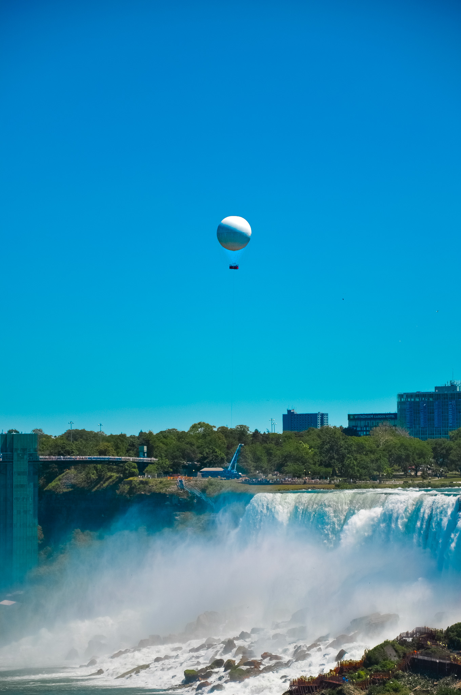
Balloon over the Falls
Niagara Falls
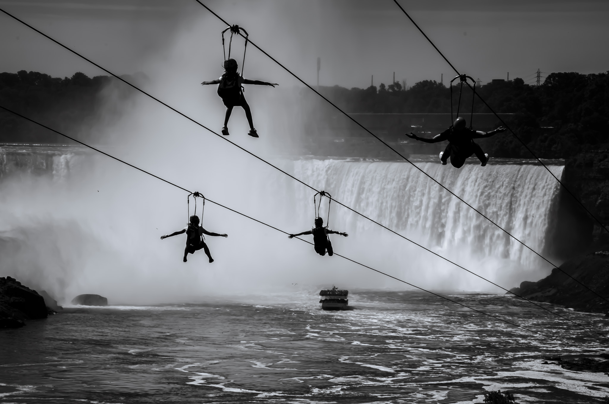
Flight Lines
Niagara Falls
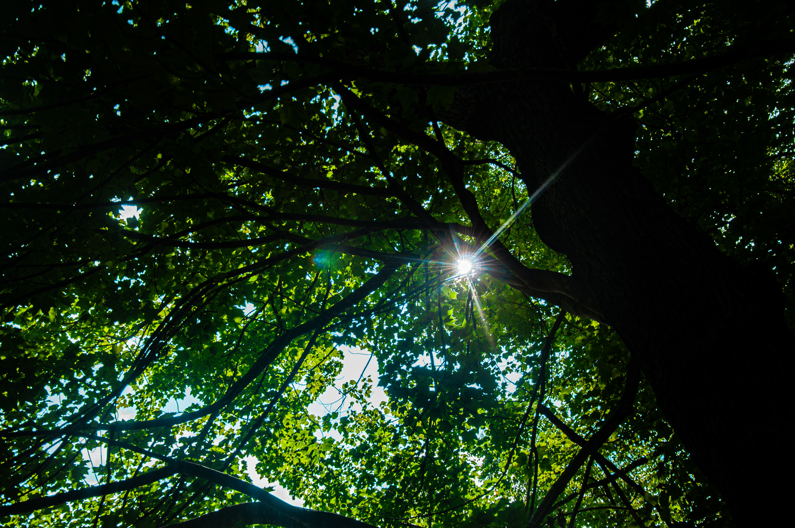
Canopy Light
Upstate New York
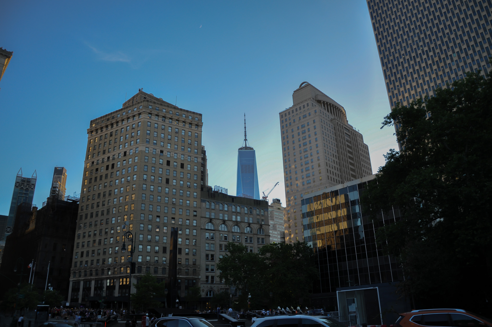
One World Trade
New York City
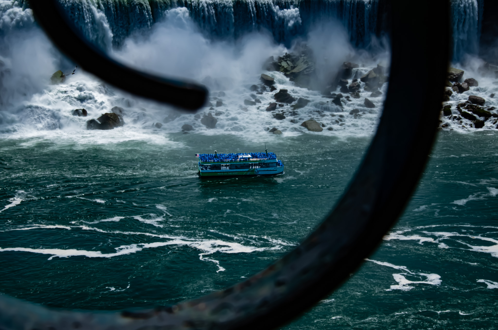
Maid of the Mist
Niagara Falls
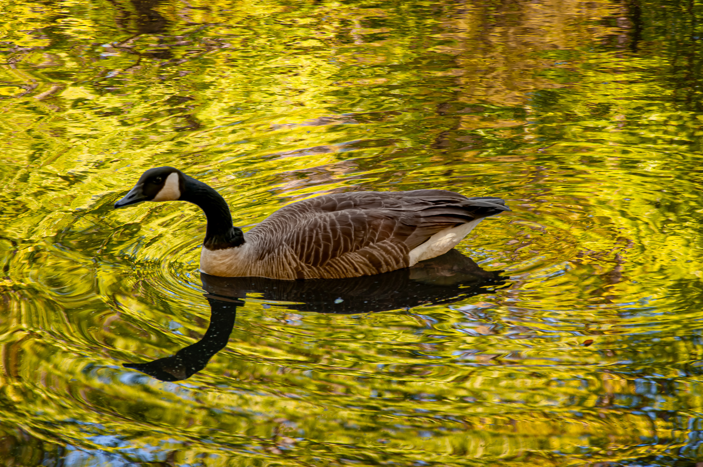
Golden Reflections
Autumn pond
Brooklyn Bridge Sunset
New York City
Misty Morning
Horseshoe Falls
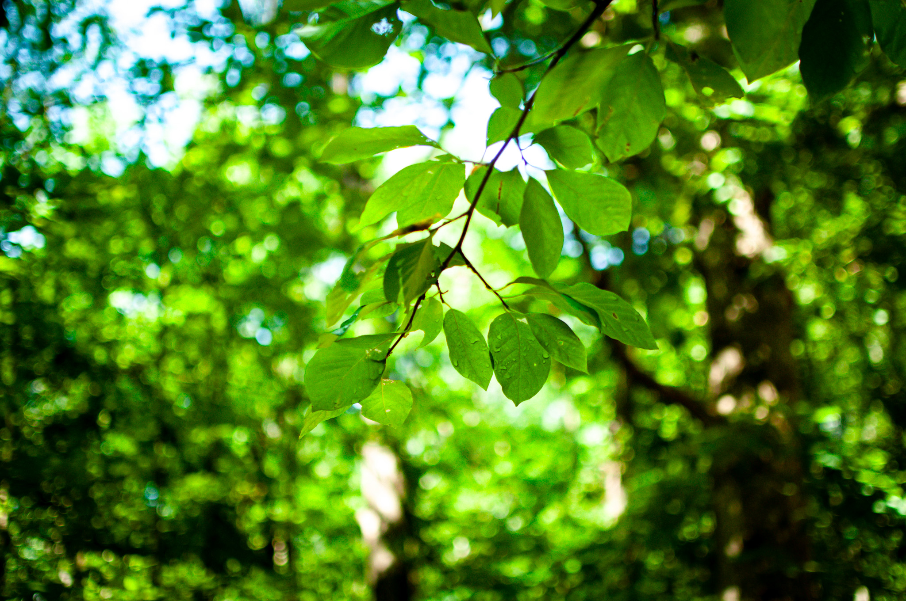
After the Rain
Forest trail
Skyline Silhouettes
Lower Manhattan
Into the Sun
Niagara gorge
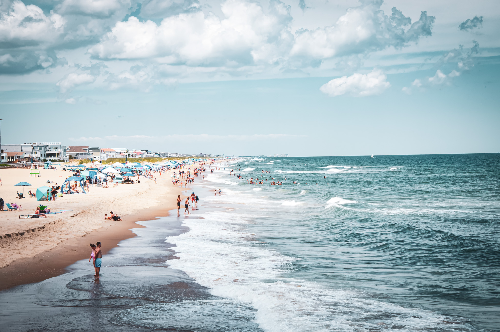
Summer Shore
Outer Banks, NC
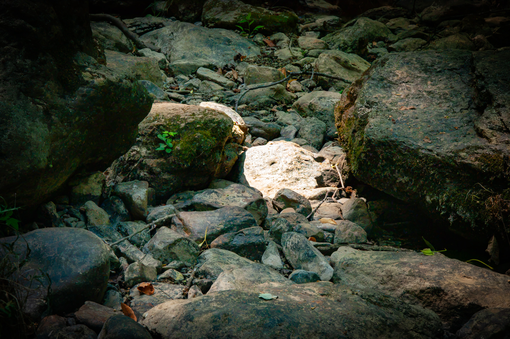
Creek Bed
Watkins Glen
Blue Skies at the Falls
Horseshoe Falls
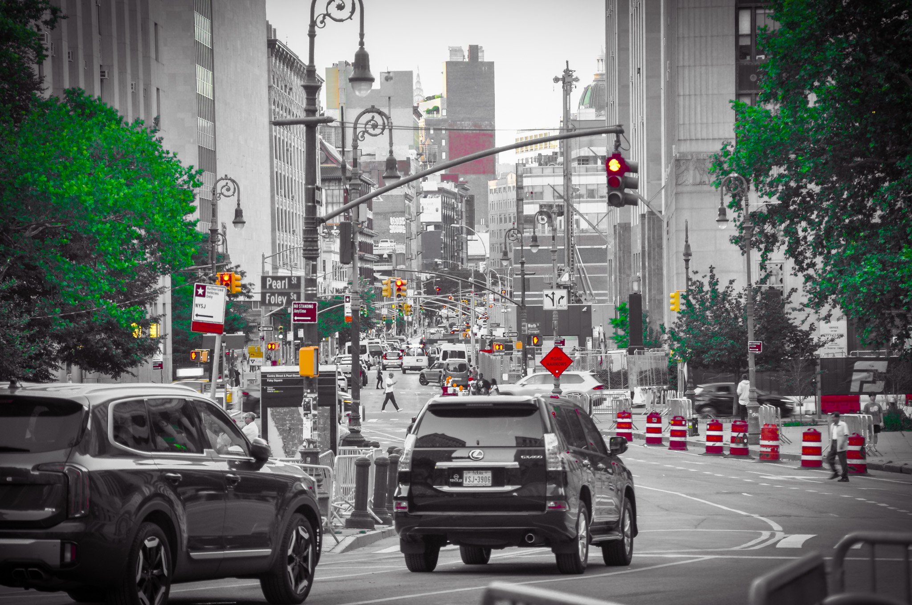
Foley Square
New York City
Crape Myrtle
Summer garden
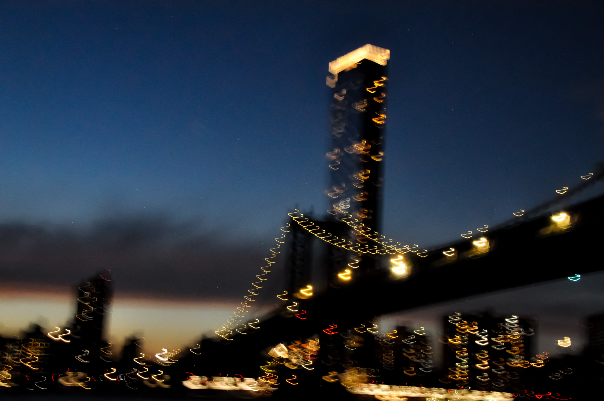
City in Motion
East River
Over the Ridge
Niagara gorge
Rose on the Trail
Found object
Passing Overhead
Queens, NY
Sixteen Ninety-Three
Williamsburg, VA
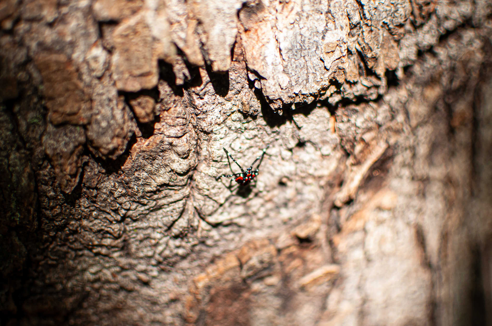
Small Wanderer
Tree bark, macro
Walking the Sky
Sculpture, dusk